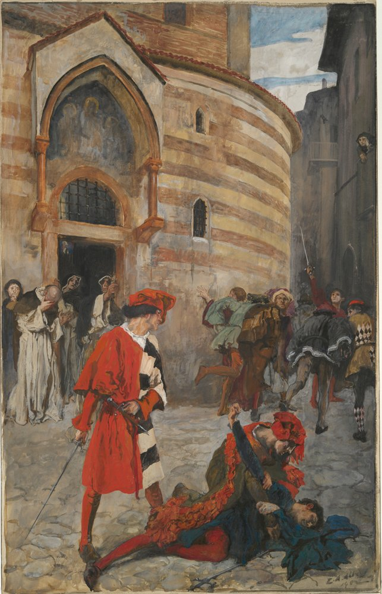

Romeu e Julieta
William Shakespeare

Sumário
Prefácio
Capítulo 1: Duas famílias Rivais
Capítulo 2: Benvólio e Tebaldo
Capítulo 3: Romeu Montecchio
Capítulo 4: Julieta Capuleto
Capítulo 5: O baile de Máscaras
Capítulo 6: O tempo do Amor
Capítulo 7: A procura e o encontro
Capítulo 8: Frei Lorenzo di Reggio
Capítulo 9: Histórias na história
Capítulo 10: A escada e o acaso
Capítulo 11: O previsto e o inesperado
Capítulo 12: Água de Serpente
Capítulo 13: Madessilvas
Profácio
Sinopse
Há muito tempo duas famílias banham em sangue as ruas de Verona. Enquanto isso, na penumbra das madrugadas, ardem as brasas de um amor secreto. Romeu, filho dos Montéquio, e Julieta, herdeira dos Capuleto, desafiam a rixa familiar e sonham com um impossível futuro, longe da violência e da loucura. Romeu e Julieta é a primeira das grandes tragédias de William Shakespeare, e esta nova tradução de José Francisco Botelho recria com maestria o ritmo ao mesmo tempo frenético e melancólico do texto shakespeariano. Contando também com um excelente ensaio introdutório do especialista Adrian Poole, esta edição traz nova vida a uma das mais emocionantes histórias de amor já contadas.

Curiosidades de Shakespeare
- Michelangelo morreu no mesmo ano do nascimento de Shakespeare
- Galileu Galilei nasceu no mesmo ano